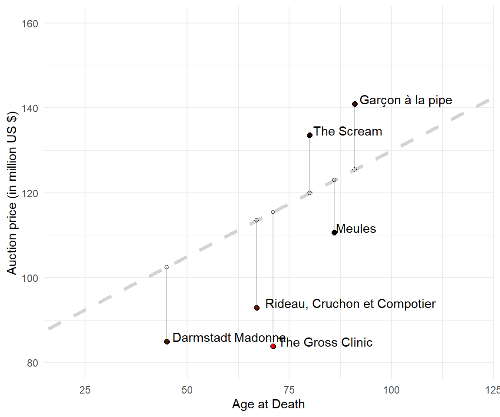
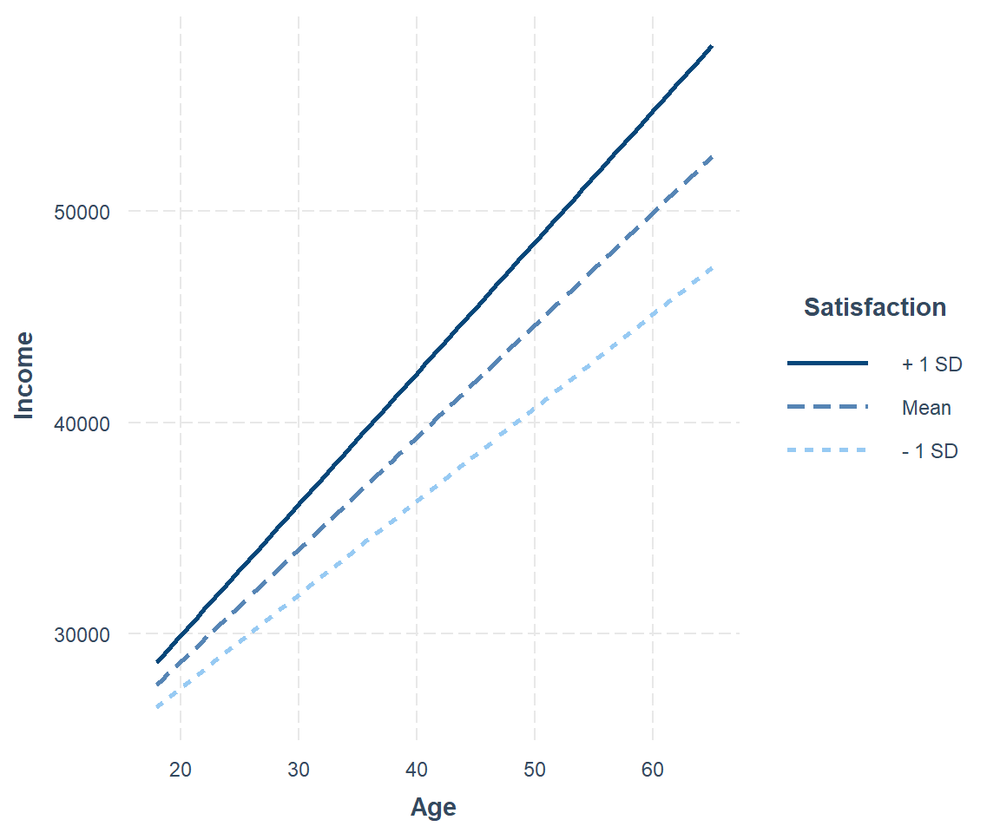

Chapter 11 First Difference
11.2 Data Management (4 pt)
# Load data
library(haven)
library(tidyverse)
library(magrittr)
# Read
pl <- readRDS("data/pl_reduced.rds")
pequiv <- readRDS("data/pequiv_reduced.rds")
# Merge data
master <- merge(pl, pequiv, by = c("pid", "syear"))All negative values represent missing values. Do a complete case analysis (n should be 338892). Drop all Stata labels with remove_all_labels() from sjlabelled package.
# Drop missings
master[master < 0] <- NA
master <- master[complete.cases(master), ]
# Drop labels
library(sjlabelled)
master <- remove_all_labels(master)Calculate each information in master per individual (group by id). Rename plh0182 to satis, d11109 to years_educ and d11101 to age.
- Hourly wages can be calculated as total annual income (
ijob1) divided by total annual work hours (e11101).- You may store log of hourly wage as a separate column/variable
log_inc_hourly. - Please filter for annual work hours larger than 0 (otherwise results might be
Inf), before dividing. - Please filter for hourly wages larger than 1, before taking the log.
- You may store log of hourly wage as a separate column/variable
- Years of schooling are readily available in SOEP.
- Tenure is not available in SOEP.
- (reilich2011smoking?) suggests “Experience is the potential experience following Mincer. We calculate the age minus the years of schooling minus 6 and minus the number of years with the experience of being unemployed.”.
- Calculate
tenurelike thistenure = age - years_educ - 6 - years_unemp. - Calculate the number of years being unemployed
years_unempas the number of observations per individual minus the sum of all years that this individual was employed.e11102is the employment status (0 for unemployed, 1 for employed) in a particular year. - Some people exhibit negative tenure for various reasons. Filter for positive values.
Store the prepared data as mincer. Summary statistics should roughly be equal to the following table:
# Data stuff
mincer <- master %>%
rename(satis = plh0182,
years_educ = d11109,
age = d11101) %>%
group_by(pid) %>%
filter(e11101 > 0) %>%
mutate(inc_hourly = ijob1/e11101) %>%
filter(inc_hourly > 1) %>%
mutate(log_inc_hourly = log(inc_hourly)) %>%
mutate(years_obs = n()) %>%
mutate(years_emp = sum(e11102)) %>%
mutate(years_unemp = n() - sum(e11102)) %>%
mutate(tenure = age - years_educ - 6 - years_unemp) %>%
filter(tenure > 0) %>%
arrange(pid)
#select(c("pid", "syear", "years_educ", "tenure", "inc_hourly", "log_inc_hourly"))mincer <- as.data.frame(mincer)
library(stargazer)
stargazer(mincer[,c(3:5)], type="text")library(gtsummary)
mincer %>%
select("years_educ", "tenure", "inc_hourly") %>%
tbl_summary() %>%
bold_labels() %>%
add_n()| Characteristic | N | N = 189,5141 |
|---|---|---|
| pid | 189,514 | 2,977,501 (505,402, 20,009,405) |
| years_educ | 189,514 | 11.50 (10.50, 13.50) |
| tenure | 189,514 | 24 (14, 32) |
| inc_hourly | 189,514 | 12 (8, 17) |
| 1 Median (IQR) | ||
11.3 Data Visualization (2 pt)
The graph shows the hourly wage (not logged) in relation to the work experience for 5 random people that are observed for at least 5 years. You can use the sample_n_groups() function from previous exercises.
sample_n_groups = function(grouped_df, size, replace = FALSE, weight=NULL) {
grp_var <- grouped_df %>%
groups %>%
unlist %>%
as.character
random_grp <- grouped_df %>%
summarise() %>%
sample_n(size, replace, weight) %>%
mutate(unique_id = 1:NROW(.))
grouped_df %>%
right_join(random_grp, by=grp_var) %>%
group_by_(grp_var)
}library(ggplot2)
set.seed(44)
mincer %>%
group_by(pid) %>%
nest() %>%
filter(purrr::map_lgl(data, ~ nrow(.x) >= 5)) %>%
unnest() %>%
sample_n_groups(5) %>% # select 3 pid for all time
ggplot(aes(x = tenure, y = inc_hourly, col=factor(pid))) +
geom_line() + geom_point() +
labs(title="Income and Work Experience",
subtitle="Selected Sample of 5 People",
x="Work Experience (Years)", y="Hourly Wage (Euro)",
colour="person") + # give some illustrative labels
theme(legend.position = "none")
11.4 Data Modeling (2 pt)
We select a subset of data for the years 2017 and 2018 (T=2). We calculate a pooling model, first difference and fixed effects. We use the plm package for all model setups. Estimate models without education and without the constant:
\[\ln w_{it} = \beta_1 \text{tenure}_{it} + \beta_2 \text{tenure}^2_{it} \]
mincer1718 <- mincer %>%
filter(syear == 2017 | syear == 2018)
# OLS
library(plm)
LM2 <- plm(log_inc_hourly ~ tenure + I(tenure^2) -1, data=mincer1718,
model="pooling",
index = c("pid","syear"))
# Fixed Effects
FE2 <- plm(log_inc_hourly ~ tenure + I(tenure^2) -1, data=mincer1718,
model="within",
index = c("pid","syear"))
# Fixed Effects
FD2 <- plm(log_inc_hourly ~ tenure + I(tenure^2) -1, data=mincer1718,
model="fd",
index = c("pid","syear"))Create a stargazer table for model comparison, such as:
# Stargazer Comparison
library(stargazer)
stargazer(LM2, FD2, FE2, type="text",
column.labels=c("Pooling", "FD", "FE"),
#keep=c("inc"),
dep.var.labels.include = FALSE, model.numbers = FALSE,
omit.stat="f")
#>
#> ==========================================
#> Dependent variable:
#> -----------------------------
#> Pooling FD FE
#> ------------------------------------------
#> tenure 0.203*** 0.077*** 0.077***
#> (0.001) (0.012) (0.012)
#>
#> I(tenure2) -0.003*** -0.001*** -0.001***
#> (0.00002) (0.0002) (0.0002)
#>
#> ------------------------------------------
#> Observations 15,440 6,229 15,440
#> R2 0.106 0.0003 0.015
#> Adjusted R2 0.106 0.0001 -1.443
#> ==========================================
#> Note: *p<0.1; **p<0.05; ***p<0.0111.5 Minimal Example
Please create a minimal working example to illustrate the differences between FD and FE. How minimal can it be?
MWE <- data.frame(id = c(1,1,1,1,1,1,1,2,2,2,2,2,2,2),
time = seq(from=1, to=7, by=1),
married = c(0,0,1,1,0,1,1, 0,0,1,1,0,1,1),
happy = c(5,5,8,7,4,7,5, 7,7,9,8,5,8,6))
#married = c(0,0,1,1,0,1,1, 1,1,0,0,0,1,0),
#happy = c(6,5,8,7,4,7,5, 7,7,3,3,5,5,6))
#married = round(runif(14, min = 0, max = 1),0),
#happy = round(runif(14, min = 4, max = 10),0))- Create a dataset
MWEfor two people (id1 and 2) with 7 observations (timeperiods from 1 to 7). - Create two variables. A dummy called
married(regressor) and ahappinessoutcome variable (natural numbers ranging from 0 to 10). You may create the values ofmarriedandhappymanually. - Create a line plot for happiness over time colored by each individual. (In total, you should have two lines of different color.)
- Mark the marriage status by any reasonable label (there are several options in
ggplot).
library(ggplot2)
ggplot(MWE, aes(x = time, y = happy, col=factor(id))) +
geom_line(position = position_jitter(w = 0.2, h = 0.2)) +
geom_point(aes(shape=factor(married)), size=4, position = position_jitter(w = 0.2, h = 0.2)) +
labs(title="Marriage and Happiness", subtitle = "Jitter added to confuse the reader.",
x="Time (Years)", y="Happiness",
colour="Person", shape="Marriage")
Calculate a FE and FD estimator for how the marriage dummy affects happiness. Play around with different values and see how the FE and FD estimators changes. Select values such that FD is reasonable higher than FE. The two models look like this:
# Fixed Effects
FE_marry <- plm(happy ~ married -1, data=MWE,
model="within",
index = c("id","time"))
#FE_marry <- lm(happy ~ married + as.factor(id), data=MWE)
# First Difference
FD_marry <- plm(happy ~ married -1, data=MWE,
model="fd",
index = c("id","time"))
stargazer(FE_marry, FD_marry, type="text",
column.labels=c("FE", "FD"),
keep=c("married"),
dep.var.labels.include = FALSE,
model.numbers = FALSE)
#>
#> =====================================================
#> Dependent variable:
#> ----------------------------
#> FE FD
#> -----------------------------------------------------
#> married 1.750** 2.833***
#> (0.592) (0.405)
#>
#> -----------------------------------------------------
#> Observations 14 12
#> R2 0.443 0.883
#> Adjusted R2 0.341 0.883
#> F Statistic (df = 1; 11) 8.741** 48.908***
#> =====================================================
#> Note: *p<0.1; **p<0.05; ***p<0.01From this table, it can be seen that the immediate impact getting married (2.83) is higher than the overall level difference of being married (1.75).